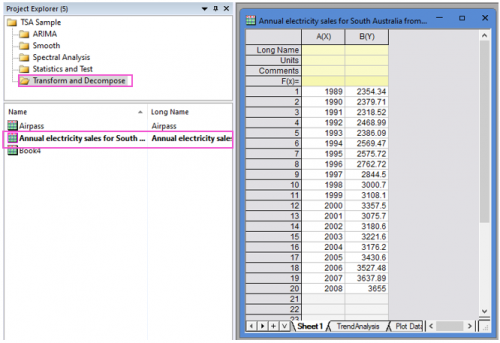
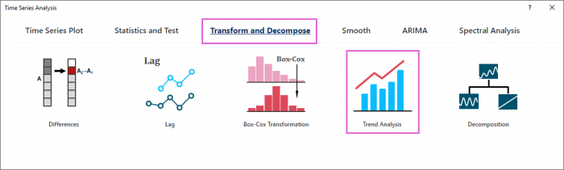
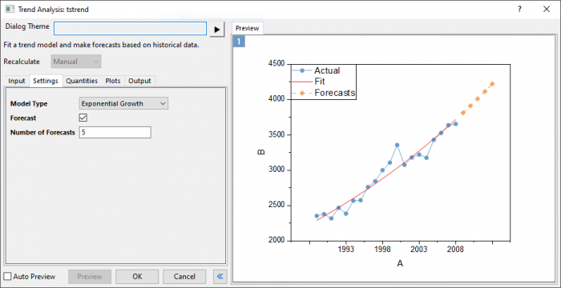
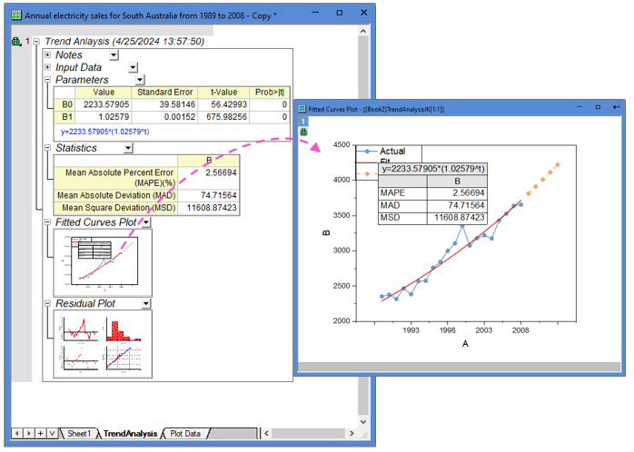

Tutorial for Trend Analysis Tool
TSA-TD-TA-Tutorial
Steps in Origin
- Open the sample project file in Origin, go to Folder Transform and Decompose using the Project Explorer. Activate the workbook Annual electricity sales for South Australia from 1989 to 2008.

- Highlight column B in worksheet. Click the Time Series Analysis App icon
 in the Apps Gallery window.
in the Apps Gallery window.
- Choose Transform and Decompose tab. Click Trend Analysis icon to open the dialog.

- In the Setting tab,choose Exponential Growth model type. Enter 5 in Number of Forecasts box.

- Click Preview button to display fitted curve with forecasts against actual data.
- Accept all other default settings and click OK button
